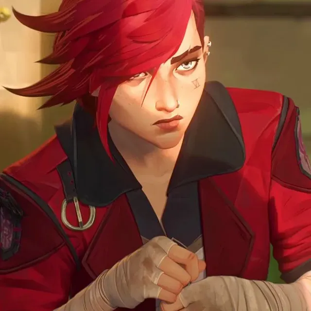
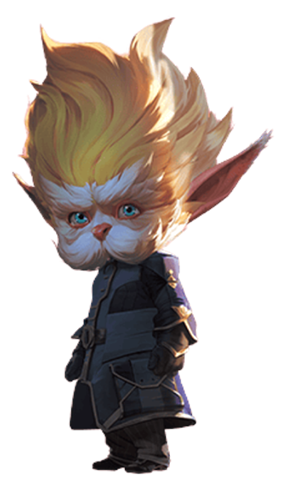
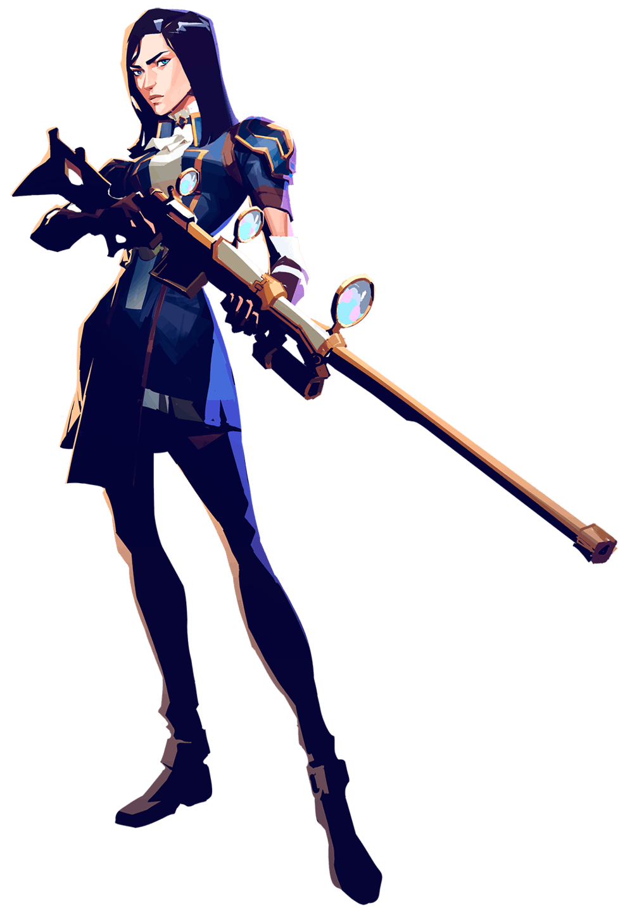
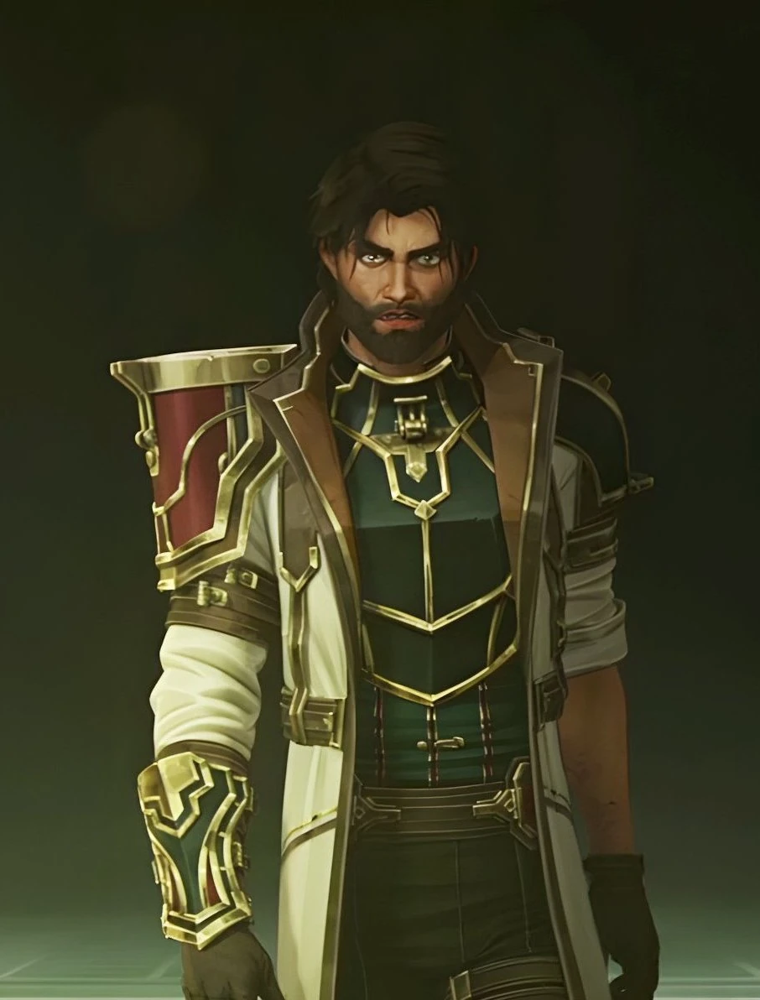
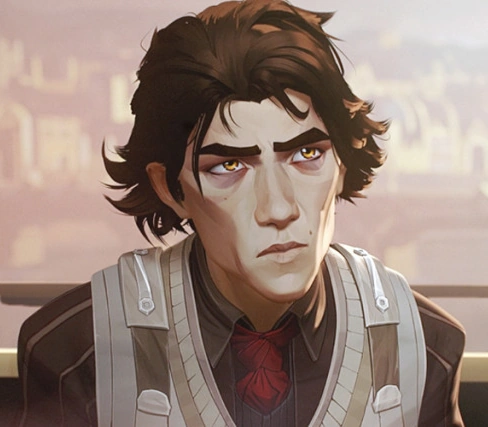
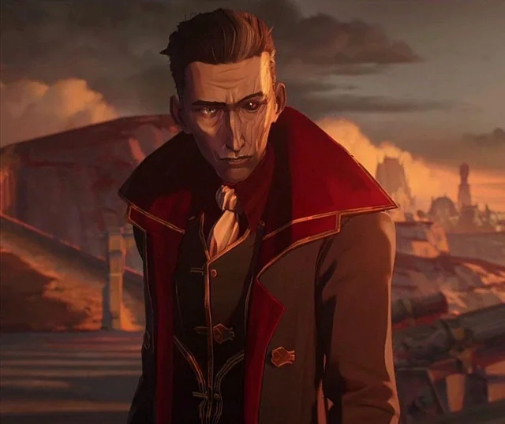
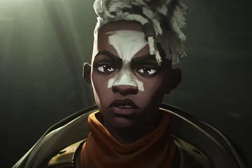
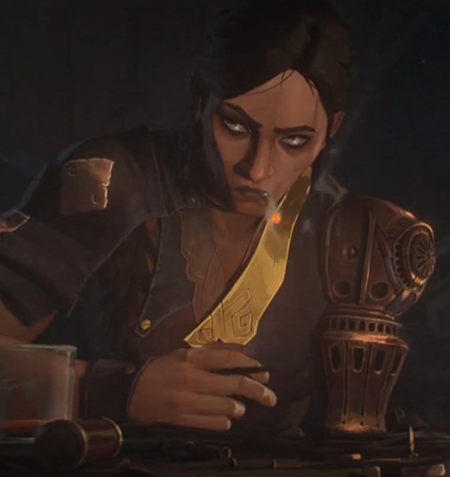

Piltover / Zaun
Vi
Criada en los túneles de Zaun, carga con la pérdida de su familia y con una lealtad inquebrantable hacia Jinx, aunque el camino de ambas ya no sea el mismo.
Crónicas de Piltover y Zaun
Once nombres que sostienen, transforman y quiebran el equilibrio entre Piltover y Zaun. Mientras no subas una foto, cada tarjeta muestra su inicial; agregá tus propias imágenes en la carpeta src/ con el mismo nombre de archivo que usa cada tarjeta y van a reemplazar la inicial automáticamente.

Criada en los túneles de Zaun, carga con la pérdida de su familia y con una lealtad inquebrantable hacia Jinx, aunque el camino de ambas ya no sea el mismo.
Antes Powder. Creativa, imprevisible y explosiva: en Zaun, su caos siempre tiene un motivo, aunque ella sea la última en admitirlo.

Un científico brillante y uno de los fundadores del Consejo, que observa el progreso con curiosidad y cautela.

Hija de una familia noble de Piltover que elige la insignia de enforcer antes que la vida cómoda que le tocaba.

Inventor de la hextech y símbolo del progreso de Piltover, atrapado entre sus ideales y las decisiones que debe tomar en el Consejo.

Socio de Jayce y nacido en Zaun, ve en la hextech una posible cura para su propio cuerpo y para el sufrimiento de su ciudad.

Un líder criminal que sueña con una Zaun independiente y que encuentra en Jinx a la hija que nunca tuvo.

Amigo de infancia de Vi y Jinx, hoy líder de los Firelights, un grupo que protege lo que queda de la comunidad zaunita.
Heredera de una poderosa familia noble, mueve los hilos políticos del Consejo con una ambición tan aguda como su encanto.

Lugarteniente de Silco, curtida por años de lucha en Zaun y dispuesta a lo que sea para proteger lo que él construyó.